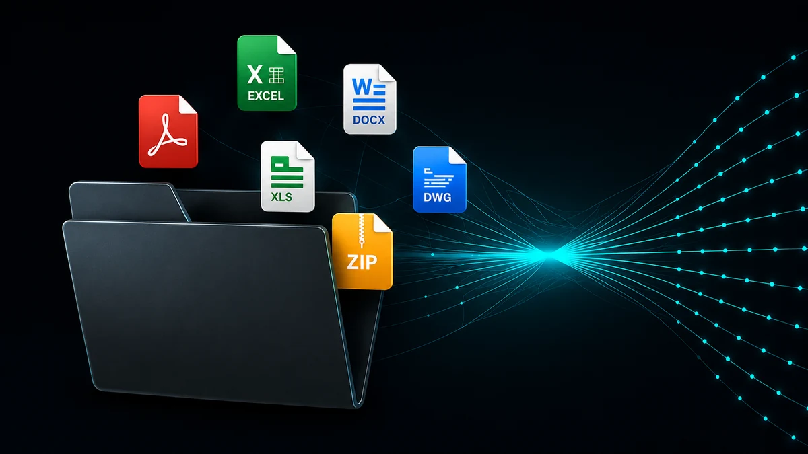
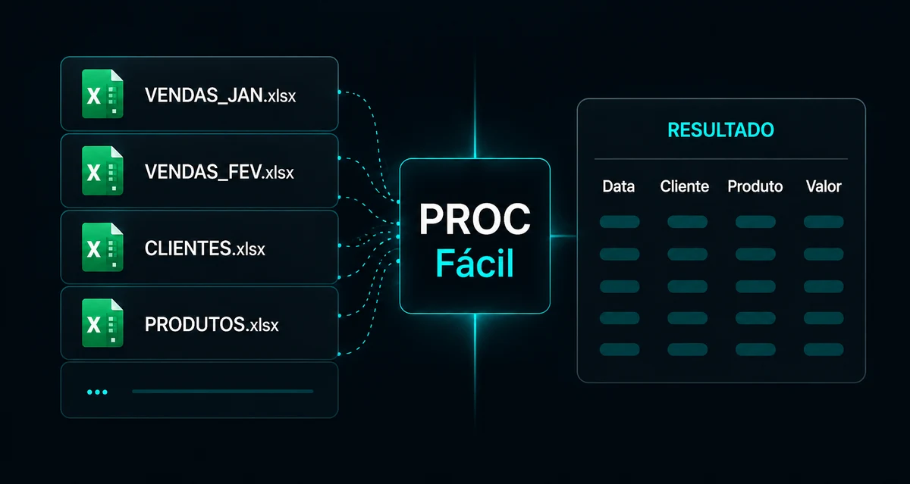
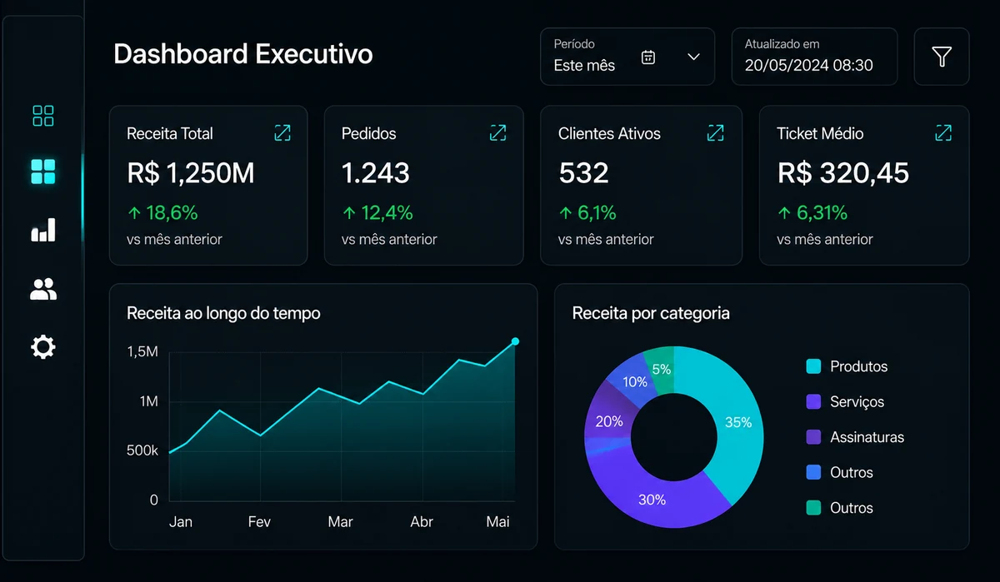
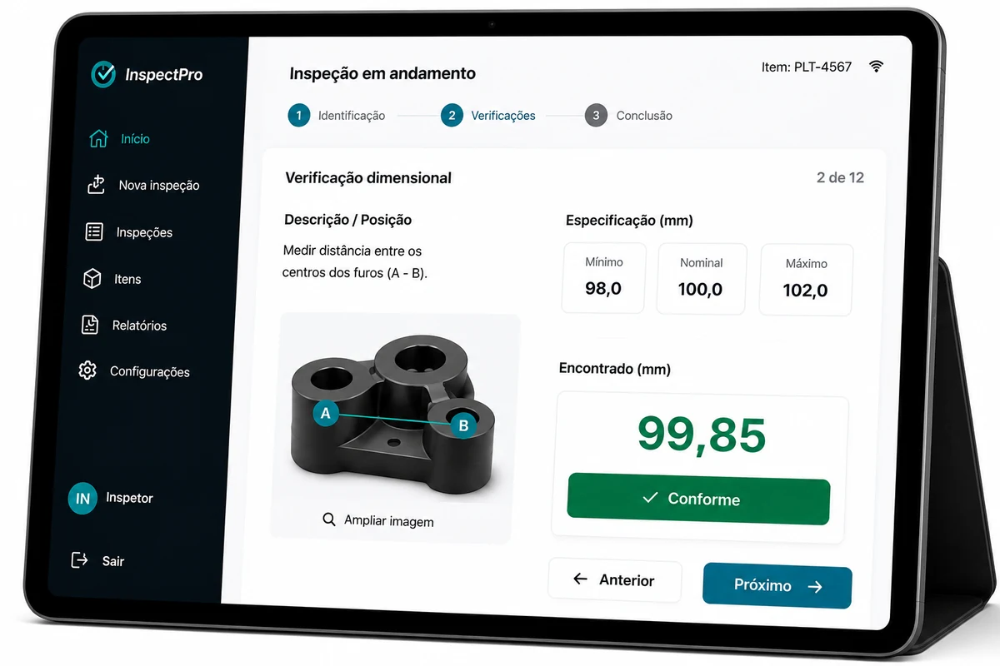
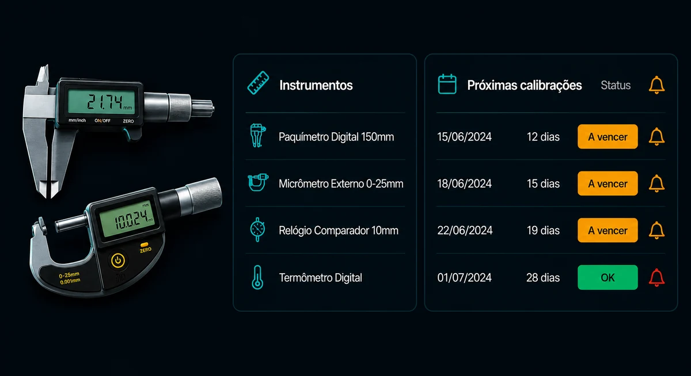

Automação • OrganizaçãoProjetos
Soluções que transformam tempo em resultado.
Projetos criados para organizar processos, automatizar tarefas, consolidar informações e apoiar decisões com mais clareza, agilidade e confiabilidade.
-
-

Automação • DadosPROC Fácil
Consolida informações de diferentes planilhas com busca automatizada entre bases e colunas, reduzindo o trabalho manual de comparação e organização dos dados. Projeto detalhado -

Dados • VisualizaçãoDash Top
Transforma dados de planilhas em dashboards executivos com indicadores, filtros e visualizações claras para apoiar análises e decisões. Projeto detalhado -

Qualidade • ProcessosSistema Digital de Inspeção
Transforma inspeções em papel em um processo digital guiado, com imagens ampliáveis, registros padronizados e histórico centralizado para facilitar consultas e rastreabilidade. Projeto detalhado -

Qualidade • GestãoSistema de Gestão de Calibração
Protótipo de uma solução para centralizar instrumentos, prazos, certificados e alertas de calibração em uma interface organizada, segura e rastreável. Projeto conceitual / protótipo Projeto detalhado
Processos
Problemas reais transformados em soluções estruturadas.
Automação
Redução de tarefas manuais e repetitivas.
Dados
Informações organizadas para apoiar decisões.
Prototipação
Ideias traduzidas em fluxos e interfaces aplicáveis.